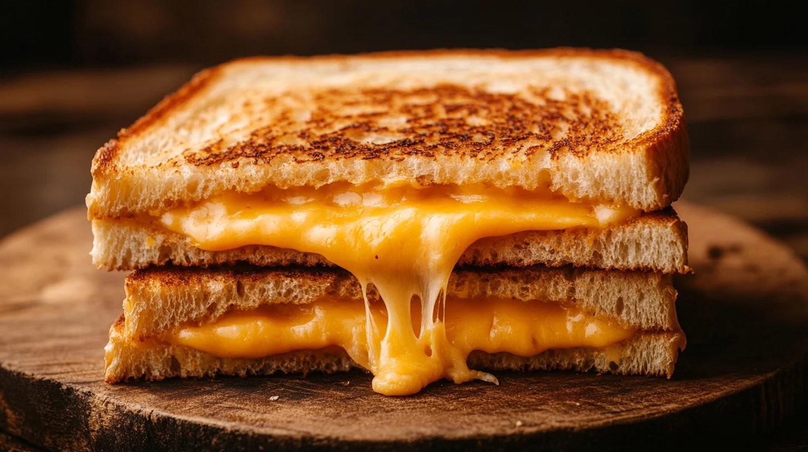

Grilled Cheese
Ingrediants
- Thick bread, Texas Toast or Wonder Bread are great choices
- Butter
- Cheese/Cheeses of choice
- Knife to spread butter
- Salt
Why I Love It
You know, there's nothing better than a nice simple grilled cheese sandwhich. It soothes the soul. There is not a single person on earth who will say they hate grilled cheese. That is why I picked this simple recipe, if you find it is too simple, there are plenty of ways to make it more complicated. If you really wanted to so that for some reason.

Steps
- Take two slices of bread
- Spread butter over both sides of the bread
- Add two layers of cheese, if you have different types, mix and match the cheese
- Plop the grilled cheese onto the grill or frying pan, which ever you choose
- Cook for about 10-15 minutes
- You'll know it's ready when the edges begin to turn a dark brown and the cheese has fully melted
- Take grilled cheese off grill or pan and cut in half if desired
- Need be, add a sprinkle of salt on top
- Enjoy!